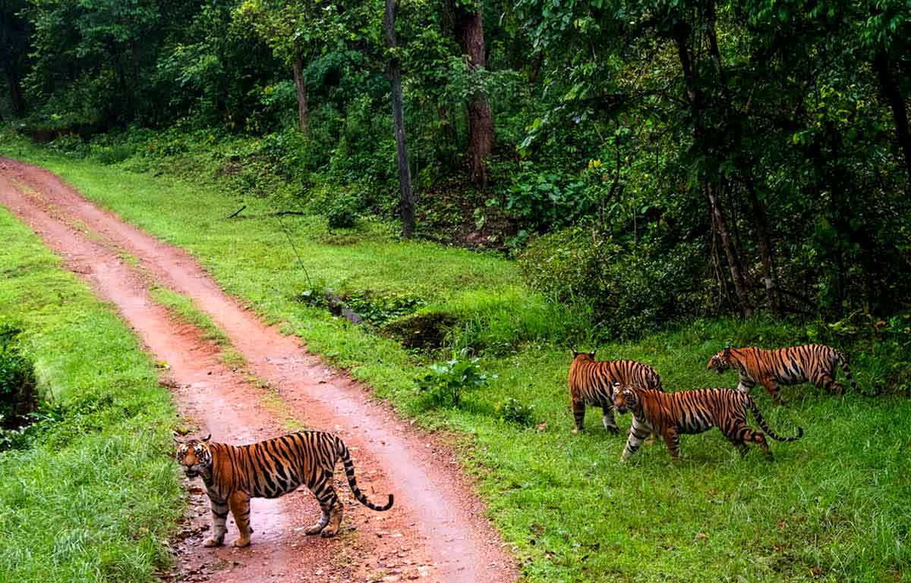
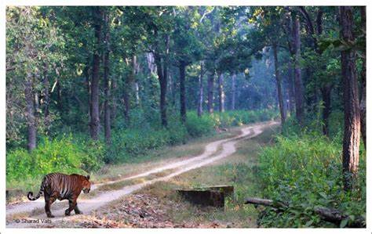

A spectacular haven for wildlife and natural beauty
Kanha National Park, located in the heart of Madhya Pradesh, India, is one of the largest and most picturesque national parks in the country. Established in 1955, it is part of the larger Kanha Tiger Reserve, which was created in 1973 as a part of Project Tiger, India's most important wildlife conservation project. Covering an area of over 940 square kilometers, the park boasts a stunning landscape of lush sal and bamboo forests, grassy meadows, and meandering streams.
Kanha is renowned for its rich and diverse wildlife. It is home to the majestic Bengal tiger, the park's most famous inhabitant, along with leopards, wild dogs, and the rare hardground barasingha, also known as the swamp deer, which is the park's mascot. Visitors can also spot a variety of other mammals, including sloth bears, Indian wild dogs (dhole), gaur (Indian bison), and several species of deer, such as spotted deer (chital) and sambar.
Bird enthusiasts will find Kanha a paradise, with over 300 species of birds recorded in the park. From the vibrant Indian roller to the elusive crested serpent eagle, the park offers excellent bird-watching opportunities. The varied habitat, including dense forests, open meadows, and water bodies, supports a wide array of avian life, making it a prime location for bird photographers and nature lovers alike.
The flora of Kanha National Park is equally impressive. The dense forests are predominantly composed of sal trees, but the park also features a rich variety of other vegetation, including bamboo thickets, grasslands, and mixed forests. The diverse plant life not only provides a habitat for wildlife but also contributes to the park's stunning scenic beauty, particularly during the monsoon season when the entire landscape turns lush and green.
Kanha has been at the forefront of wildlife conservation in India. The successful efforts to save the barasingha from extinction are a testament to the park's dedication to preserving its natural heritage. Ongoing conservation projects focus on habitat restoration, anti-poaching measures, and community involvement to ensure the long-term survival of the park's diverse ecosystems and resident species.
Visiting Kanha National Park offers a unique and unforgettable experience. Safaris are conducted in open jeeps, allowing visitors to get up close and personal with the park's wildlife while guided by experienced naturalists. The park's well-maintained infrastructure includes several visitor facilities, such as accommodation options ranging from luxury resorts to budget lodges, ensuring a comfortable stay amidst nature. Additionally, the park's interpretive center provides educational exhibits about the park's flora, fauna, and conservation history.